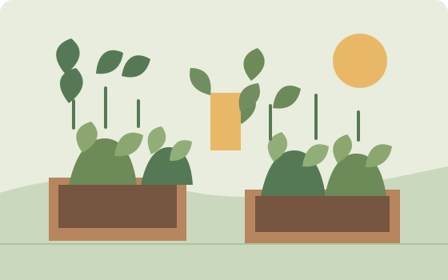
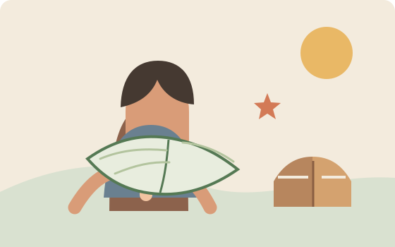
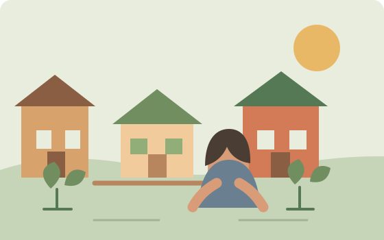

Missão
Fortalecer comunidades com iniciativas de educação, alimentação digna e participação cidadã.
Uma comunidade mais forte começa perto
Acreditamos que toda transformação começa com um gesto. Conectamos pessoas, recursos e oportunidades para florescer junto com quem mais precisa.

Quem somos
A Rede Semente é uma organização sem fins lucrativos que cultiva oportunidades ao lado de comunidades. Há 12 anos, transformamos cuidado em ação coletiva.
Nossa históriaFortalecer comunidades com iniciativas de educação, alimentação digna e participação cidadã.
Um futuro em que todas as pessoas tenham espaço para viver com dignidade e florescer.
Escuta ativa, transparência, respeito à diversidade e transformação feita em conjunto.
O que fazemos

Segurança alimentarCultivamos alimentos frescos e autonomia em hortas cuidadas pela própria comunidade.
Saiba mais
EducaçãoEspaços acolhedores e rodas de leitura que aproximam crianças e famílias dos livros.
Saiba mais
CidadaniaMutirões, escuta comunitária e espaços públicos mais verdes, seguros e acolhedores.
Saiba maisCompromisso com você
Prestamos contas com clareza e responsabilidade. Cada contribuição tem destino e cada resultado pode ser acompanhado.
Documentos demonstrativos: relatórios reais devem ser publicados pela organização antes do lançamento.